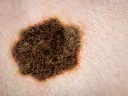

Created by 2 dedicated highschool students, Skinter is an application built to give unofficial diagnoses to individuals who seek quick assurance before visiting a doctor. It identifies a variety of possible skin lesions:
* This is not a replacement for your doctor, and you must visit a certified doctor/nurse for a thorough and complete diagnoses!